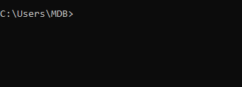
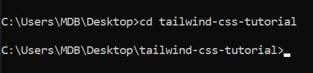
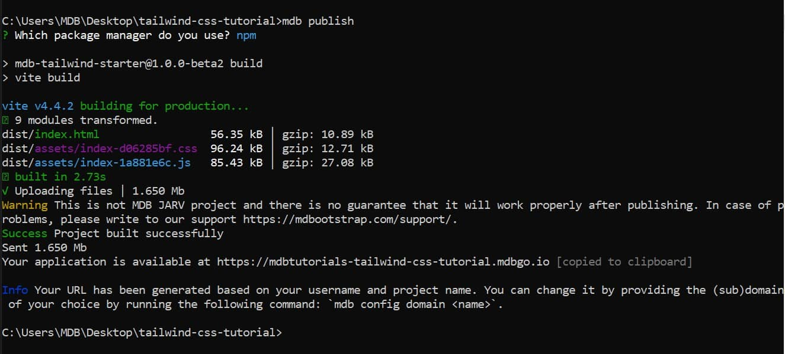

Woah, we've finished our first project!
Take a look - it looks perfect on both big screens and mobile devices. It is 100% responsive.
Demo and source codeNow it's time to share it with the world!
In this lesson you will learn how, thanks to MDB GO, you can easily and free of charge publish and host your website on the Internet.
To use MDB GO and publish and host your projects for free you need:
All of these things we discussed and worked through in an earlier lesson. So if something doesn't work for you or you don't understand something, go back to the Basics / MDB GO and deploy.
In this lesson, I'll assume you already have everything mentioned above and I'll just show you how to publish the project we just finished.
Launch the terminal (if you are using Windows, type "cmd" in the system search and run Command Line app / on MacOS, search for the "terminal" application).
To log in to MDB GO, in the terminal type the mdb login command
and press enter.
Then enter your username and password that you set when registering your MDB account.

Make sure you are in the path of your project in the terminal. If you are
not - type the command cd (it means going to the specified
path) and paste the path to the folder where you have your project.
I moved this project to my desktop and finally my project path looks like this ( by the way - I'm working on Windows):
Remember that your path may be different, depending on where you placed your project and whether you changed the name of the TW Elements package folder.
If you entered the correct path, you should see in the terminal that you have been moved to the selected location.
Alright, we're ready to go!
In the terminal, type mdb publish command and press enter. You
will see the message:
You will be asked for the default package manager. Stay with the npm option and just hit enter again
And it's ready! Your project is available at the link provided in the terminal.
This link is automatically copied to your clipboard, so you can immediately
press ctrl + v and paste it into the search box in
the browser.
Follow this link and admire your first Tailwind CSS project available online worldwide!
For example, my project is available at:
https://mdbtutorials-tailwind-css-tutorial.mdbgo.io
Congratulations! You have finished and published your first project 🚀 If you want to brag about it or write your impressions, hit me on twitter 😉